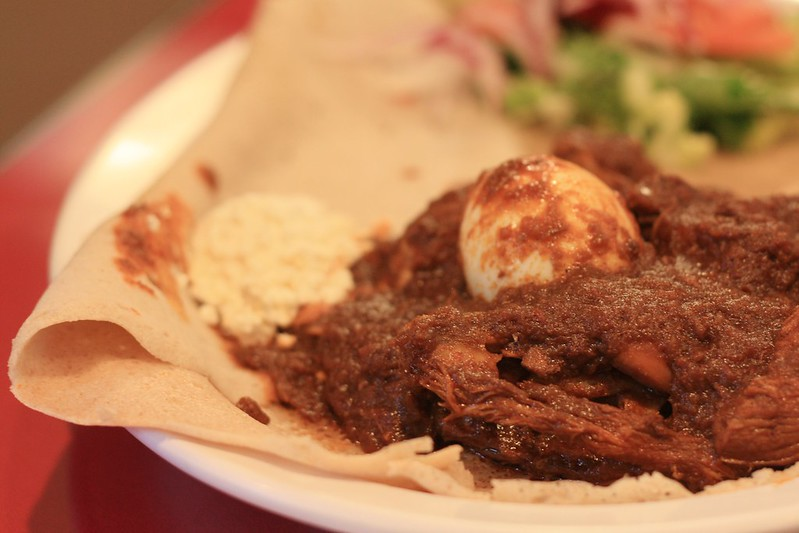

Doro Wat
Spicy Chicken Stew

© Content licensed under CC BY 4.0 by Connie Yizhou Wang.
Doro Wat is one of Ethiopia's most beloved dishes—and my personal favorite. This richly spiced, slow-cooked chicken stew is full of deep, savory flavors and is known for its bold, red color, thanks to berbere, a blend of chili peppers, garlic, ginger, and various spices that adds just the right amount of heat. Made with bone-in chicken pieces, hard-boiled eggs, caramelized onions, and niter kibbeh (a spiced clarified butter), the stew develops a thick, luxurious sauce with a complex, spicy-sweet depth. Served with injera, Doro Wat is a dish meant to be savored and shared, often reserved for special gatherings and celebrations.
| Serving Size | Prep Time | Cook Time |
|---|---|---|
| 5 servings | 30 minutes | 2 hours and 30 minutes |
Ingredients
- 3 lbs of Chicken Thighs
- 4 Large Eggs
- 2 tbs of Niter Kibbeh (Spiced Butter)
- 3 tbs of Regular Butter
- 2 tbs of Extra Virgin Olive Oil
- 1/2 cup of Tej (Ethiopian Honey Wine)
- can be substituted with white wine mixed with 1 tsp of honey
- 2 tbs of Fresh Lemon Juice
- 3 cups of Yellow Onions
- 1 tbs of Garlic
- 1 tbs of Ginger
- 1/4 cup of Ethiopian Berbere (Spice Blend)
- 1 1/2 tsp of Salt
Instructions
- Cut the chicken thighs into 1 inch pieces. Place the pieces in a bowl and pour lemon juice over. Let sit at room temperature for at least 30 minutes.
- Mince the onions, garlic, and ginger.
- Heat the niter kibbeh (spiced butter) along with olive oil on a stove. Add the onions and saute, covered, over low heat for 45 minutes, stirring occasionally.
- Add the garlic, ginger, and 1 tablespoon of butter and continue to saute, covered, for another 20 minutes, stirring occasionally.
- Hard boil the eggs in another pot. Peel the eggs and pierce them all over with a fork about 1/4 inch deep.
- Add the Ethiopian berbere (spice blend) and the 2 remaining tablespoons of butter and saute, covered, over low heat for another 30 minutes, stirring occasionally.
- Add the chicken, salt, and wine and bring to a boil. Reduce the heat to low, cover, and simmer for 45 minutes, stirring occasionally.
- Adjust the seasonings, adding more berbere according to heat preference. Add the boiled eggs and simmer on low heat, covered, for another 15 minutes.
- Half or quarter the eggs and arrange on the plates with the stew. Serve hot with injera, bread, or rice.